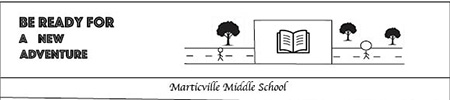

Jorn Kok's Portfolio for AENG 110 Print project |
||
| Home Print project Photo project Video project | ||
|
 |
In the print project we had to create a custom bookmark for Marticville Middle School. The bookmark had to have an inspiring message for the students at Marticville. |
Home Print project Photo project Video project |
|
© 2023 Jorn Kok |
||